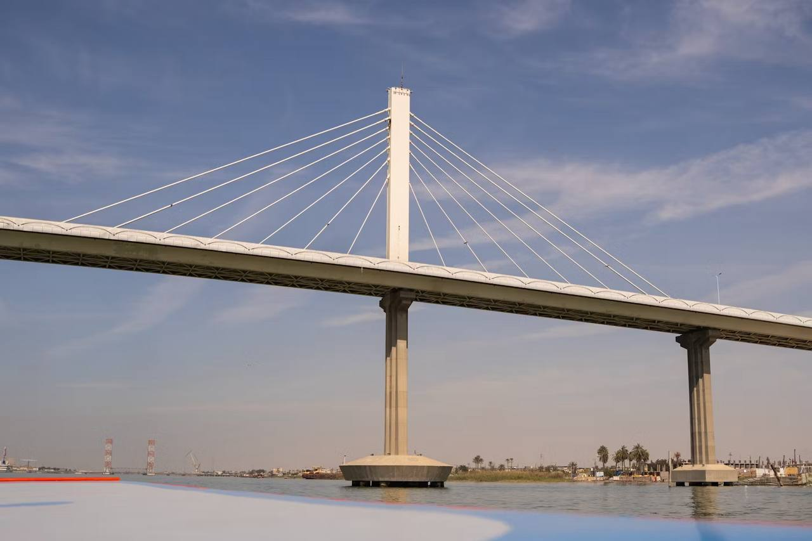
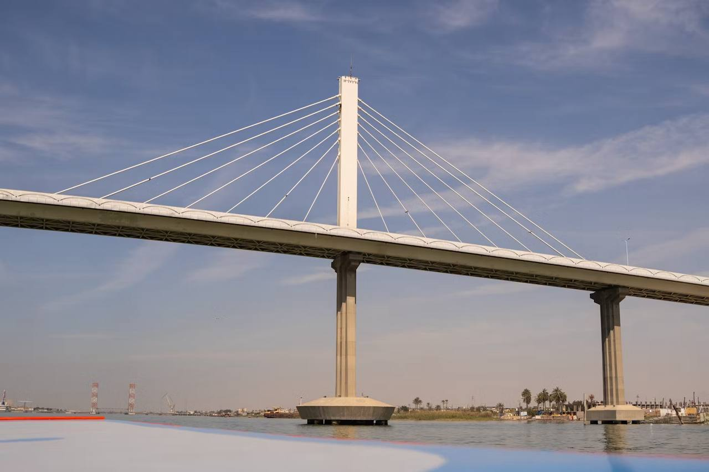

البصرة هي ثالث أكبر مدينة في العراق، تقع في أقصى الجنوب الشرقي. تأسست المدينة منذ آلاف السنين ومرت بالكثير من الحضارات مثل السومريين، والبابليين، والإغريق، والعرب. تاريخها العريق جعلها مركزًا حضاريًا وتجاريًا في المنطقة. اليوم، تعتبر البصرة مدينة متجددة، تجمع بين التراث الثقافي العريق والحداثة. تشتهر المدينة بالموانئ الكبرى والنفط والغاز الطبيعي، إلى جانب دورها البارز في التجارة البحرية.
الطقس في البصرة
اليوم: مشمس | 35°C

عن البصرة
أهم الأماكن السياحية في البصرة
1. جزيرة السندباد
جزيرة السندباد تعتبر واحدة من أجمل المواقع السياحية في البصرة، تقع في شط العرب وتتميز بموقعها المثالي بين الطبيعة والتاريخ. يشاع أن السندباد البحري كان يمر بهذه المنطقة في رحلاته المليئة بالمغامرات.
2. سوق البصرة القديم
أحد أقدم الأسواق في العراق، ويعد مكانًا تاريخيًا رائعًا للتجول وشراء المنتجات التقليدية مثل التوابل والمجوهرات والملابس.
3. حديقة الأندلس
تعد من أكبر الحدائق في البصرة، حيث تضم مساحات خضراء كبيرة، ممرات للمشي، بحيرات صناعية ونوافير جميلة. تعتبر مكانًا مثاليًا للعائلات للراحة والاستمتاع.
4. متحف البصرة
يحتوي المتحف على مجموعة رائعة من الآثار التي تعكس تاريخ المدينة، من العصر السومري وحتى العصر الحديث.
5. شاطئ البحر العربي
البصرة تحتوي على شواطئ خلابة على البحر العربي، مما يوفر للزوار فرصة الاستمتاع بالأنشطة البحرية المختلفة مثل السباحة والرياضات المائية.
أجمل الأماكن في البصرة
 
